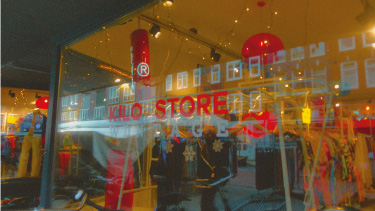
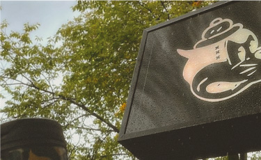
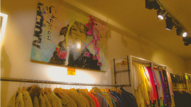

VINTAGE KLEDING
Mocht je nou echt niet weten wat vintage kleding is, dan heb ik wat informatie voor jou opgeschreven met een paar shop tips.
WAT IS VINTAGE KLEDING?
Wat is vintage kleding nou eigenlijk? Vintage kleding is kleding dat al gedragen is door een persoon en weer opnieuw wordt verkocht. Vintage kleding kan soms ook heel oud zijn of juist nieuw, het gaat erom dat het sowieso gedragen is door een ander persoon. Deze kleding komt dan meestal terecht in vintage winkels die dan deze kleren verkopen voor een klein prijsje terwijl de kwaliteit eigenlijk best goed is. Het verschil tussen Vintage kleding en een Kringloopwinkel is dat je de vintage kleding niet meer nieuw kan halen in de meeste gevallen.
KILO VINTAGE
Een voorbeeld van een bekende vintage winkel is Kilo vintage. Bij kilo vintage wordt de prijs bepaald door hoeveel het product waard is per kilo. Ze hebben winkels op verschillende plekken in Nederland en is ook bekend onder de jongeren. Ze hebben daar altijd hele leuke al gedragen kleding. Alle categorieen zijn goed gesorteerd waardoor je snel en makkelijk kan vinden waar je naar zocht of iets leuks hebt gevonden waar je helemaal niet naar zocht. De medewerkers zijn ook aardig en staan er voor open om je te helpen. Ze hebben ook altijd een grote collectie van denim, sportkleren, leren jassen en truien.
MOKUM VINTAGE
Een ander voorbeeld van een vintage winkel is Mokum vintage waar de prijzen van de gedragen kleding al gelijk wat duurder zijn dan een normale vintage winkel. Dit komt doordat Mokum vintage veel merk kleren verkoopt van allerlei verschillende soorten merken. Soms is hun kleding nieuw, maar soms zijn ze ook tweedehands gekocht. De merkkleren worden al gelijk wel voor een lagere prijs verkocht. Het is een streetwear vintage winkel en je kan er merken vinden zoals; Prada, Stussy, Patta, Nike, Supreme enz.
DE BESTE STREETWEAR ITEMS
Mokum vintage is eigenlijk de perfecte winkel als je houdt van streetwear merken en niet bang bent om iets meer te betalen voor tweedehands kleding. Hun collectie aan kleding, schoenen en assecoires is heel leuk en breed.
TIPS
Er zijn natuurlijk wel een paar dingen waar je op moet letten tijdens het kopen van vintage kleding:
- Kijk of er gaten of andere dingen zijn waardoor het kleding stuk kapot is en misschien kan je dan korting vragen.
- Zoek naar hardnekkige vlekken en vraag aan jezelf of je dat eruit zou kunnen krijgen.
- Denk er altijd aan dat er een hele kleine kans zou zijn dat er huisstofmijt op het kleding stuk kan zitten.
- Kijk altijd naar het label en kijk wat voor merk het is en of het misschien veel waard is.
- Doe altijd een prijs en kwaliteit verhouding.
- Als een vintage kleding winkel duur is terwijl de producten veel minder waard zijn ga dan naar een andere vintage winkel.